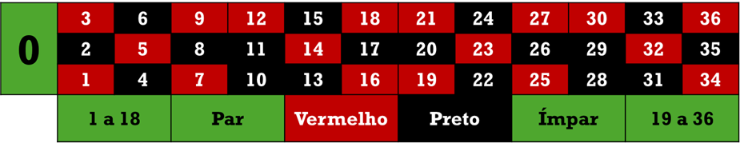

Estruturas de seleção¶
Lembre-se
| Símbolo | Significado | Símbolo | Significado |
|---|---|---|---|
| \(\lor\) | OR | \(\land\) | AND |
| \(\lnot\) | NOT | \(\oplus\) | XOR |
-
Assumindo que os predicados \(A\), \(B\), \(C\) e \(D\) valem, respectivamente, Falso, Falso, Verdadeiro e Falso, qual o resultado da avaliação das expressões lógicas a seguir?
- \((A \lor B) \land \lnot C\)
- \((A \oplus B) \lor (\lnot C \land D)\)
- \((A \land B) \oplus (\lnot C \lor D)\)
- \((\lnot A \lor B) \land (C \oplus D)\)
-
Considerando os as variáveis inteiras p, q e r, com valores 10, 20 e 30 respectivamente, calcule o resultado das expressões lógicas a seguir
- \(p > q\)
- \(q \geq r\)
- \(r > p\)
- \((p < q) \land (p < r)\)
- \((p > q) \lor (r > q)\)
- \(\lnot(\lnot(p > q) \land \lnot(r > q))\)
-
Construa um programa que receba um número inteiro e informe se ele é positivo, negativo ou nulo, e se ele é par ou ímpar.
-
Construa um programa que leia dois números e indique se são iguais ou se são diferentes. Mostre o maior e o menor (nesta sequência).
-
Faça um programa que leia o número de um mês do primeiro semestre do ano (1 a 6) e escreva o nome correspondente. Seu programa deve avisar o usuário se ele digitar um valor fora da faixa possível.
-
Construa um programa que leia três valores (\(a\), \(b\) e \(c\)) e diga se a soma de \(a\) com \(b\) é menor, maior ou igual a \(c\).
-
Determinada empresa dá descontos para mulheres maiores de 45 anos e para jovens de qualquer sexo com menos de 18 anos. Faça um programa que leia o sexo e a idade de uma pessoa e diga se ela tem ou não direito a algum desconto
-
Imagine um banco onde você tem uma conta com um determinado saldo e que aceita apenas uma operação de crédito (depósito) ou débito (saque). Construa um programa onde o usuário vai informar o saldo inicial da conta e o valor da operação (valores positivos são créditos, e valores negativos são débitos) e o programa vai informar se a conta tem saldo suficiente para a operação, no caso de um débito, ou o saldo final no caso de um crédito.
-
Um hotel possui um esquema de cobrança de diárias onde, além da diária, a hóspede paga uma taxa por dia de hospedagem, essa taxa varia com o total de dias da estadia. Se forem até 8 dias de hospedagem, a taxa é de \(\text{R\$}~8.00\) por dia, e se o período de hospedagem for maior que 8 dias, a taxa é de \(\text{R\$}~5.00\) por dia. Construa um programa que receba o valor da diária e o número de dias de hospedagem e apresente o valor total a ser pago pelo hóspede considerando diárias e taxas.
-
Uma empresa paga os seus funcionários por hora trabalhada (valor da hora multiplicado pelo total de horas trabalhadas no mês) depois de descontar alguns encargos trabalhistas. Se o valor bruto a receber do funcionário for menor que \(\text{R\$}~1000.00\) não há desconto; se o valor for maior que \(\text{R\$}~5000.00\) o desconto é de 27%, e; se o valor estiver na faixa intermediária, o desconto é de 15% do salário bruto. Em todos os casos, há ainda o desconto do vale transporte, que corresponde a 6% do salário bruto. Construa um programa que receba o valor da hora de trabalho, o total de horas trabalhadas e escreva o salário bruto, o total de descontos, e o salário líquido (bruto – descontos) do funcionário.
-
Uma empresa paga ao vendedor uma comissão calculada de acordo com o valor de suas vendas. Se o valor da venda de um corretor for de \(\text{R\$}~50000.00\) ou mais, a comissão será de 12% do valor vendido. Se o valor da venda for maior que \(\text{R\$}~30000.00\) e menor que \(\text{R\$}~50000.00\), a comissão é de 9,5%. Nos demais casos, a comissão é de 7%. Faça um programa que leia o total de vendas de um vendedor e imprima a comissão devida pela empresa a ele.
-
Anos bissextos são aqueles que são múltiplos de 4, mas não de 100, exceto pelos múltiplos de 400, que também são bissextos. Faça um programa que leia um ano e indique se aquele ano é bissexto ou não.
-
O cálculo do imposto de renda retido na fonte (IRRF) pago pelo trabalhador do mercado formal é calculado de forma escalonada. Considerando a tabela de imposto de renda em vigor (e apresentada a seguir), faça um programa que leia o salário bruto de um trabalhador e calcule o IRRF a ser pago.
Mínimo Máximo Alíquota Parcela a deduzir R$ 0,00 R$ 1.903,98 0,0% R$ 0,00 R$ 1.903,99 R$ 2.826,65 7,5% R$ 142,80 R$ 2.826,66 R$ 3.751,05 15,0% R$ 354,80 R$ 3.751,06 R$ 4.664,68 22,5% R$ 636,13 R$ 4.664,68 Ilimitado 27,5% R$ 869,36 Por exemplo, alguém que ganha \(\text{R\$}~5000.00\) vai pagar \(\text{R\$}~505.64\) de imposto, pois \(5000 \times \frac{27.5}{100}-869.36=505.64\).
-
O sistema de avaliação de determinada disciplina, é composto por três provas. A primeira prova tem peso 2, a segunda tem peso 3 e a terceira tem peso 5. Faça um algoritmo para calcular a média final de um aluno desta disciplina e dizer se ele foi aprovado (média maior ou igual a seis), se deve fazer prova final (média maior que quatro e menor que 6) ou se foi reprovado (média menor ou igual a 4).
-
O ingresso em uma universidade acontece por meio de um processo seletivo com duas fases. Na primeira fase, o certame composto por três provas (P1, P2 e P3). A nota final do candidato é calculada pela média entre as três provas. Passam para a segunda fase aqueles alunos com média superior a seis, desde que não tenha zerado nenhuma das provas. Faça um programa que leia as três notas e indique se o candidato foi aprovado ou não para a segunda fase.
-
Construa um programa que leia uma data qualquer na forma de dia, mês e ano como números, e imprima o próximo dia. Considere que fevereiro possui, sempre, 28 dias.
-
Determinado país possui um sistema monetário com cédulas de 100, 50, 20, 10, 5, 2 e 1 dinheiros, e não há divisões centesimais ("centavos"). Uma loja deseja fazer o troco utilizando a menor quantidade possível de cédulas (há um suprimento muito grande de cada uma das células). Construa um programa que receba o valor da compra, o valor pago pelo cliente (sempre maior que o valor da compra) e calcule o troco que deve ser dado, indicando quantas cédulas de cada valor devem ser usadas.
-
Os salários de uma empresa possuem um reajuste não-linear, ou seja, quem ganha menos tem um reajuste maior do que o reajuste de quem ganha mais. A regra é a seguinte: salários maiores ou iguais a \(\text{R\$}~10000.00\) recebem 3% de reajuste; salários maiores ou iguais a \(\text{R\$}~5000.00\) e menores que \(\text{R\$}~10000.00\) recebem 6%, e por fim; salários menores que \(\text{R\$}~5000.00\) recebem 10%. Faça um programa que receba o salário atual de um funcionário e calcule o valor do reajuste que será aplicado ao salário, imprimindo o salário atual, o valor do reajuste, e o novo salário.
-
Faça um programa que leia o número do mês e imprima quantos dias ele tem (fevereiro tem, sempre, 28 dias)
-
Faça um programa para jogar papel-pedra-tesoura. O computador deve escolher um número entre 1 (papel), 2 (pedra) ou 3 (tesoura), e o usuário deve digitar um número também entre 1 e 3. Papel ganha de pedra, pedra ganha de tesoura, e tesoura ganha de papel. Imprima quem ganhou, ou se foi empate1.
-
O cardápio de uma lanchonete está representado na tabela abaixo. Escreva um programa que leia o código do item pedido, a quantidade e calcule o valor a ser pago por aquele lanche. Considere que a cada execução somente será calculado um item.
Código Nome do produto Preço unitário 100 Misto quente 8,00 101 Hamburguer 12,00 102 Batata-frita 8,00 103 Anéis de cebola 8,50 104 Suco de laranja 7,00 105 Refrigerante 6,00 -
Um banco resolveu oferecer um crédito extraordinário a um conjunto de clientes em função do saldo deles no próprio banco, de acordo com a tabela abaixo. Construa um programa que, dado o saldo do cliente, informe qual o valor do crédito disponível
Saldo mínimo Saldo máximo Crédito R$ 0,00 R$ 200,00 Nenhum crédito R$ 200,01 R$ 1.000,00 20% do saldo R$ 1.000,01 R$ 2.000,00 30% do saldo R$ 2.000,01 R$ 10.000,00 50% do saldo R$ 10.000,01 Ilimitado 100% do saldo -
O índice massa corporal (IMC) de uma pessoa é calculado como sendo a razão entre o peso (Kg) e o quadrado da altura (m). Construa um programa que receba o peso e a altura de uma pessoa e imprima seu resultado de acordo com a tabela abaixo.
IMC Resultado \([0, 18.5)\) Abaixo do peso \([18.5, 25)\) Peso normal \([25, 30)\) Sobrepeso \([30, 35)\) Obesidade grau 1 \([35, 40)\) Obesidade grau 2 \(\geq 40\) Obesidade grau 3 -
Construa um programa que leia um número inteiro entre 1 e 7 e informe o dia da semana correspondente, sendo domingo o dia de número 1. Se o número não corresponder a um dia da semana, mostre uma mensagem de erro.
-
Crie um programa que leia uma letra entre A e Z e imprima se a letra lida foi uma vogal ou uma consoante.
-
Hoje os carros flex, que podem rodar com gasolina e/ou etanol, são comuns nas grandes cidades. Um problema que a maior parte dos donos de carros flex tem é decidir se vai abastecer com gasolina ou com etanol. Não adianta olhar, apenas, para o preço por litro (\(\text{R\$}~6.30\) da gasolina contra \(\text{R\$}~4.00\) do etanol por esses dias, por exemplo), porque o carro rodando com etanol gasta mais litros de combustível por Km rodado, e esse consumo varia de carro para carro. Por exemplo, um determinado carro pode fazer 18Km/litro com gasolina e 10Km/litro com etanol, enquanto outro faz 22Km/l contra 12Km/l. Você deve construir um programa que receba a distância que será percorrida pelo carro, o consumo em Km/l com gasolina e com etanol, os preços por litro da gasolina e do etanol e apresente para o usuário qual combustível é mais vantajoso (vai custar menos para fazer a viagem) e qual será o custo da viagem com esse combustível.
-
Sobrou um dinheiro no final do mês e você tem diversas opções para investir esse dinheiro, variando as taxas (quanto ele aumenta por mês, com juros compostos ) e os prazos de investimento (quanto tempo ele vai ficar lá). Por exemplo, \(\text{R\$}~100.00\) aplicados por 12 meses em uma taxa de 0,8% ao mês produzem \(\text{R\$}~110.03\) no final do período. São tantas opções que o melhor a fazer é escrever um programa que receba o valor disponível para investir, as taxas e os prazos de duas aplicações e indique qual das duas é mais vantajosa (em qual você vai ter mais dinheiro no final do período de investimento)2.
-
Aproveitando a alta demanda, um hotel introduziu um esquema de cobrança de diárias que cobra mais de quem fica por mais tempo, e faz isso por meio de uma "taxa de serviços" que é acrescentada em cada dia que o hóspede fica no hotel. Essa taxa está representada na tabela abaixo. Faça um programa que leia o valor da diária e o número de dias que ele ficou hospedado e imprima o custo total da hospedagem.
Diárias Taxa \(<3\) R$ 20,00 \([3, 7)\) R$ 35,00 \([7, 10)\) R$ 40,00 \(\geq 10\) R$ 50,00 -
Uma operadora criou um plano de celular onde tudo é cobrado de forma escalonada. Para simplificar o problema, vamos nos ater apenas à conta de dados trafegados. A cobrança segue a seguinte lógica: o primeiro 1GiB tem um custo fixo de \(\text{R\$}~19.99\) independente do tráfego. Os 2GiB seguintes custam \(\text{R\$}~24.99\) por 1GiB cobrado de maneira proporcional. Por fim, o tráfego acima de 2048MiB é cobrado à razão de \(\text{R\$}~29.99\)/1GiB, também de maneira proporcional. Faça um programa que receba o consumo de dados em um determinado mês, em GiB, e imprima o valor da conta. Por exemplo, se o consumo foi de 3,8GiB o valor da conta será de \(\text{R\$}~19.99\) pelo primeiro GiB, mais \(\text{R\$}~24.99 \times 2\) pelos 2GiB seguintes, mais \(\text{R\$}~29.99 \times 0.8\) pelos 0,8GiB que restaram, totalizando \(\text{R\$}~79.97\). Mostre o valor final da conta com apenas 2 decimais.
-
Determinada instituição de ensino avalia seus alunos em cada disciplina com base na frequência e nas notas obtidas em duas provas, a partir das quais é calculada a nota final da disciplina como sendo a média aritmética entre as duas provas. Para que um aluno seja aprovado na disciplina. Caso o aluno tenha uma frequência menor que 75% nas aulas, ele está automaticamente reprovado, independente da média que ele obteve. Se a frequência for igual ou superior a 75% e a média for maior ou igual a 6,00, ele está aprovado. Se a média for inferior a 4,00, ele está reprovado. No caso de \(4 \leq \text{média} < 6\), o aluno deve fazer uma nova prova. Se nessa nova prova a nota for maior ou igual a 6,00, ele está aprovado com a média obtida nesta última prova; no caso de uma média menor que 6,00, ele está reprovado na disciplina tendo, como média, a maior nota entre a média original e a nota obtida na prova final. Construa um programa que leia o total de aulas ministradas, o total de faltas do aluno, as notas necessárias; a partir desses dados, indique a média da disciplina (apenas nos casos em que a frequência é igual ou superior a 75%, e se ele foi reprovado por frequência, reprovado por nota, aprovado na prova final ou reprovado na prova final.
-
Uma empresa de logística possui um grande armazém retangular utilizado para armazenar contêineres retangulares de dimensões fixas: A metros de largura, B metros de comprimento, e C metros de altura. O armazém é representado por uma área retangular horizontal de X metros de largura e Y metros de comprimento. O pé direito do armazém é Z metros, o que significa que os contêineres podem ser empilhados verticalmente, desde que a altura total da pilha não ultrapasse esse limite. Os contêineres podem ser dispostos no armazem de forma que sua largura e comprimento estejam alinhados com a largura e comprimento do armazém, ou alinhando largura do contêiner com o comprimento do armazém, e o comprimento do contêiner com a largura do armazem (girá-lo no sentido horário/anti-horário sobre o eixo da altura). Escreva um programa que leia as medidas dos contêineres e do armazem e determine a quantidade máxima de contêineres que podem ser armazenados dentro do armazém, obedecendo às restrições impostas.
-
Dizem que o período de um ano humano corresponde a sete anos caninos. O problema é que essa conversão ignora que um cachorro chega à fase adulta em aproximadamente dois anos. Assim, algumas pessoas acham melhor contar cada um dos dois primeiros anos humanos como dez anos e meio caninos, e então contar cada ano adicional como quatro anos caninos. Escreva um programa que faça a conversão entre anos caninos e anos humanos. Seu programa deve escrever uma mensagem de erro se o usuário digitar uma idade negativa.
-
Escreva um programa que receba o número de arestas de um polígono regular com até 10 arestas e escreva o nome do polígono em função do número de lados. Se o usuário digitar um número menor que 3 ou maior que 10, escreva uma mensagem de erro.
-
O horóscopo chinês atribui animais aos anos em um ciclo de 12 anos de acordo com a tabela abaixo. O padrão se repete nos anos anteriores e posteriores aos indicados na tabela (2024 foi ano do Dragão, e 1999 foi ano do Coelho). Escreva um programa que leia o ano de nascimento de um usuário (pode ser qualquer ano maior que 1900) e retorne o animal associado.
Ano Animal Ano Animal 2012 Dragão 2018 Cão 2013 Cobra 2019 Porco 2014 Cavalo 2020 Rato 2015 Carneiro 2021 Boi 2016 Macaco 2022 Tigre 2017 Galo 2023 Coelho -
Construa um programa que receba os coeficientes \(a\), \(b\) e \(c\) de uma equação do segundo grau \(\left (ax^2+bx+c=0 \right)\) e escreva as raízes reais \(r\). Se não houver raízes reais \(\left (\Delta < 0\right )\), ou se houver apenas uma raíz real \(\left (\Delta = 0\right )\), escreva uma mensagem informando isso.
\[ r = \dfrac{-b \pm \sqrt{\Delta}}{2a} \quad \Delta = b^2-4ac \] -
O comprimento de onda da luz visível situa-se entre 380 e 750 nanômetros. Embora o espectro seja contínuo, costumamos dividi-lo em seis faixas de cores principais, conforme a tabela abaixo. Radiação com comprimentos de onda inferiores a 380nm é classificada como ultravioleta, enquanto comprimentos de onda superiores a 750nm correspondem à radiação infravermelha. Escreva um programa que leia um comprimento de onda informado pelo usuário (entre 100 e 1.000.000nm) e indique qual a "cor" desse comprimento de onda.
Cor Comprimento de onda (nm) Ultravioleta \([100, 380)\) Violeta \([380, 450)\) Azul \([450, 495)\) Verde \([495, 570)\) Amarelo \([570, 590)\) Laranja \([590, 620)\) Vermelho \([620, 750)\) Infravermelho \([750, 10^6)\) -
A fórmula abaixo pode ser usada para descobrir em qual dia da semana \(d\) cairá o dia 01 de Janeiro de um determinado ano: domingo é 0, é domingo, segunda-feira é 1, ... Construa um programa que leia um ano e diga em qual dia da semana cai o dia 01 de Janeiro.
\[ d = \left( \text{ano} + \left\lfloor \frac{\text{ano} - 1}{4} \right\rfloor - \left\lfloor \frac{\text{ano} - 1}{100} \right\rfloor + \left\lfloor \frac{\text{ano} - 1}{400} \right\rfloor \right) \mod 7 \] -
Uma roleta possui 37 números e mais algumas casas (veja a figura abaixo). Desses 37 espaços, 18 são pretos, 18 são vermelhos e 1 é verde. O espaço verde contém o número 0. Os espaços 1, 3, 5, 7, 9, 12, 14, 16, 18, 19, 21, 23, 25, 27, 30, 32, 34 e 36 são vermelhos, os demais inteiros entre 1 e 36 são pretos. Podem ser feitas diversas apostas em uma roleta, entre elas:
- Número único (1 até 36)
- Vermelho ou preto
- Ímpar ou par (0 não é considerado par na roleta!)
- 1 a 18 ou 19 a 36

Uma mesa do jogo de Roleta. License: CC BY-NC-ND 4.0
Escreva um programa que gere um número aleatório entre 0 e 36, e indique quais apostas ganharam. Se o número sorteado for 0, quem ganha é apenas a banca. Por exemplo, se o número 21 for sorteado, o seu programa deve mostrar:
-
Para que três segmentos de reta, com comprimentos \(a\), \(b\) e \(c\), possam formar um triângulo, a soma dos comprimentos de quaisquer dois lados deve ser maior do que o comprimento do terceiro lado. Matematicamente, isso significa que:
\[ \left (a + b > c\right ) \land \left (a + c > b\right ) \land \left (b + c > a \right ) \]Construa um programa que leia os comprimentos dos segmentos \(a\), \(b\) e \(c\) e diga se eles formam um triângulo. Caso esses segmentos possam ser usados para criar um triângulo, escreva qual tipo de triângulo seria criado (equilátero, isósceles ou escaleno).
-
A avaliação do risco cardiovascular de um paciente pode ser feita por meio da relação entre os níveis de triglicerídeos e o colesterol HDL no sangue. Essa razão é um indicador importante para identificar a probabilidade de desenvolver doenças do coração. Construa um programa que leia os valores de triglicerídeos e HDL (em mg/dL) informados pelo usuário, calcule a razão entre triglicerídeos e HDL e classifique o risco cardiovascular do paciente segundo os seguintes critérios:
- Baixo Risco: razão menor que 2
- Risco Moderado: razão entre 2 e 3 (inclusive)
- Alto Risco: razão maior que 3
O programa deve apresentar a razão calculada com uma casa decimal e a respectiva classificação do risco cardiovascular.
-
A Taxa de Filtração Glomerular Estimada (TFGe) é um indicador utilizado para avaliar a função renal, essencial no diagnóstico e acompanhamento de doenças renais3. A TFGe é calculada a partir da creatinina sérica do paciente, considerando também fatores como idade, sexo e, em algumas versões da fórmula, etnia. Uma das fórmulas usadas com frequência é a Equação CKD-EPI Simplificada para adultos:
\[ \text{TFGe} = 141 \times \min\left(\frac{S_{\text{cr}}}{\kappa}, 1\right)^{\alpha} \times \max\left(\frac{S_{\text{cr}}}{\kappa}, 1\right)^{-1.209} \times 0.993^{\text{idade}} \times F \]Onde:
- \(S_{cr}\): concentração sérica de creatinina (mg/dL)
- \(\kappa\): 0.7 para mulheres e 0.9 para homens
- \(\alpha\): -0.329 para mulheres e -0.411 para homens
- \(F\): 1.018 para mulheres e 1 para homens
- $\min $ e $ \max $ representam respectivamente o menor e maior valor entre os termos dentro dos parênteses
A TFGe é expressa em mL/min/1,73 m². Valores menores que 60 indicam comprometimento da função renal. Construa um programa que leia a creatinina sérica (mg/dL), o sexo do paciente ("M" ou "F") e a idade, calcule a TFGe usando a fórmula acima, e apresente o resultado com duas casas decimais. Além disso, classifique o resultado conforme:
- \(\text{TFGe} \geq 90\): Função renal normal
- \(60 < \text{TFGe} < 89\): Leve redução da função renal
- \(\text{TFGe} > 60\): Comprometimento da função renal (possível doença renal crônica)
-
A Razão Albumina/Creatinina (RAC) na urina é usada para detectar a presença de albumina em excesso, um sinal precoce de lesão renal, principalmente em pacientes com diabetes ou hipertensão4. A razão é calculada dividindo-se a concentração de albumina (A) em mg pela concentração de creatinina (C) em g na mesma amostra de urina.
\[ \text{RAC} = \frac{A}{C} \]A interpretação dos resultados segue os parâmetros:
- \(\text{RAC} \geq 30\): Normal
- \(30 < \text{RAC} < 300\): Microalbuminúria (risco aumentado de doença renal)
- \(\text{RAC} \leq 300\): Macroalbuminúria (lesão renal significativa)
Construa um programa que receba a concentração de albumina e creatinina na urina, calcule a razão albumina/creatinina, e apresente a classificação correspondente.
-
A relação entre os níveis de colesterol HDL ("bom colesterol") e LDL ("mau colesterol") é usada para avaliar o risco cardiovascular de um paciente. Uma maior proporção de HDL em relação ao LDL indica menor risco, enquanto uma proporção baixa indica maior risco para doenças cardíacas. A fórmula para calcular essa razão é simples:
\[ R = \frac{\text{HDL}}{\text{LDL}} \]onde ambos os valores são expressos em mg/dL. A interpretação geral baseada na razão é:
- \(R \geq 0,4\): Risco cardiovascular baixo
- \(0.3 < R < 0.4\): Risco moderado
- \(R \leq 0.3\): Risco elevado
Construa um programa que solicite os valores de HDL e LDL ao usuário, calcule a razão HDL/LDL e exiba o resultado com uma casa decimal, juntamente com o nível de risco cardiovascular conforme os critérios estabelecidos.
-
Como desafio, implemente o papel-pedra-tesoura-lagarto-Spock. Aqui você tem a lista de quem ganha de quem. ↩
-
Depois de \(n\) períodos, com taxa de juros \(i\) a cada período, é possível saber o valor futuro (\(FV\)) a partir de um valor presente (\(PV\)) e vice-versa a partir da fórmula \(FV=PV\times(1+i)^n\). Por exemplo, se \(PV=100\), \(n=12\) e \(i=1%\), temos \(FV=100\times(1+1/100)^{12}=112.68\) ↩
-
LEVEY, Andrew S. et al. A New Equation to Estimate Glomerular Filtration Rate. Annals of Internal Medicine, v. 150, n. 9, p. 604–612, 5 maio 2009 (doi: 10.7326/0003-4819-150-9-200905050-00006). ↩
-
MOGENSEN, C. E. Microalbuminuria and hypertension with focus on type 1 and type 2 diabetes. Journal of Internal Medicine, v. 254, n. 1, p. 45–66, jul. 2003 (doi: 10.1046/j.1365-2796.2003.01157.x). ↩